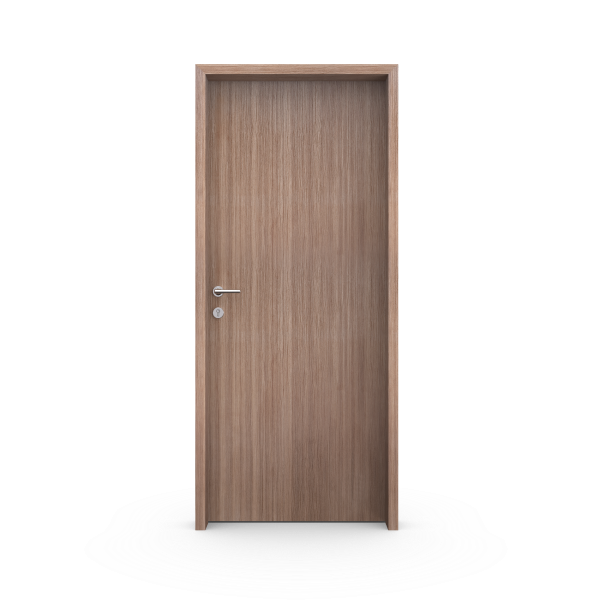

Sistemas de marcos
El marco también
define el espacio.
Un perímetro visible, una línea de sombra o una puerta integrada a la pared. Explorá cómo cambia el encuentro y consultanos por tu proyecto.

Explorá el encuentro
Marco y contramarco
Los contramarcos cubren el encuentro con la pared. Pueden ser lisos o moldurados y se regulan según el espesor del tabique.
La combinación de hoja, apertura y marco se confirma según tu proyecto.
Continuás en WhatsApp con la hoja y el sistema que estás mirando.
Exploración en 3D
El encuentro,
en tres dimensiones.
Girá el conjunto, abrí la hoja y mirá cómo se relacionan la puerta, el marco y la pared.
Placa enchapada · Marco y contramarco
Modelo conceptual de prueba. Proporciones, materiales y detalles a validar con Marroncelli.

Arrastrá horizontalmente para girar. También podés usar las flechas; con la vista enfocada, las teclas de dirección cambian el ángulo e Inicio vuelve a la vista inicial.